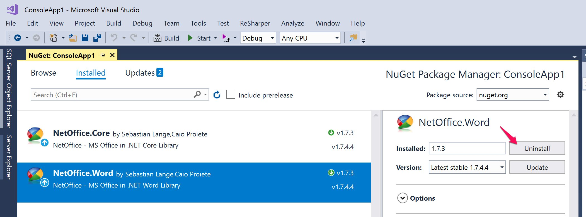
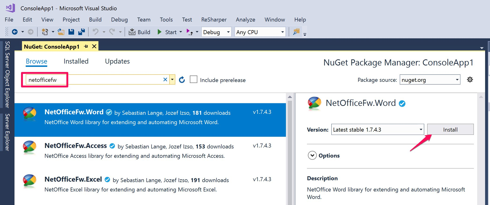

Use latest NetOfficeFw packages
By using NetOfficeFw packages you will get our latest NetOffice libraries. Our packages are digitally signed and their source code is available.
Official packages have new features, several bugfixes and have great debugging experience.
To upgrade existing projects which use the old NetOffice.* packages from NuGet (eg. NetOffice.Word, NetOffice.Excel, NetOffice.Outlook and others), you must manually uninstall these packages and get the new equivalent versions named NetOfficeFw.*.
Our official NetOffice release is 1.8.1 (as of February 2021).
Move away from old packages
We noticed a rogue account named netofficedotnet published NetOffice on NuGet in releases 1.7.4.4 and 1.7.4.11. Those packages contain old NetOffice libraries which does not work correctly. Please, check your projects for any packages published by netofficedotnet or by Erika LeBlanc.
Use this guide to migrate to official NetOfficeFw packages.
Use Package Manager Console to migrate packages
You can use Package Manager in Visual Studio to migrate to new packages by using these commands (sample for Word package):
PM> Uninstall-Package NetOffice.Word
PM> Uninstall-Package NetOffice.Core
PM> Install-Package NetOfficeFw.Word
Use NuGet Package Manager to migrate packages
To migrate to NetOfficeFw packages from Visual Studio user interface, use NuGet Package Manager.
- Right click on you project and choose Manage NuGet Packages...
- Open Installed tab
- Select your installed NetOffice packages
- Click Uninstall button
- Open Browse tab
- Enter netofficefw into search box
- Select the packages based on the MS Office application you develop for
- Click Install button
Note: Please, make sure you uninstall all existing NetOffice.* packages, including NetOffice.Core to prevent issues in the application caused by referencing NetOffice libraries twice and with different versions.

